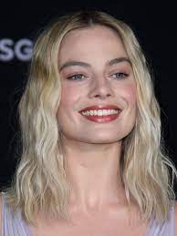

|
|
|  | |
传统印象中金发碧眼的「刻板芭比」和各种各样的芭比娃娃同伴都居住在芭比乐园，这是一个母系社会，所有女性都自信、自给自足且成功。当她们的肯尼整天在海滩上从事娱乐活动时，芭比们拥有所有重要的工作职位，比如担任医生、律师和政治家。「刻板肯尼」是刻板芭比的金发肌肉男朋友，他只有在和芭比在一起时才开心并一直想寻求更亲密的关系，但芭比拒绝了他，转而支持独立和女性友谊。在一次舞会上，刻板芭比突然变得担心自己的死亡。第二天，她发现自己无法再完成平常的作息和活动，不但雙腳變成了扁平足，头发和皮肤也不再没有瑕疵，連洗澡時放出來的水也是冷水。随后刻板芭比受朋友推荐而去拜访一个「怪芭比」，她原本是最漂亮的芭比，后来被物主废弃。这个芭比告诉她，为了治愈她神秘的痛苦，她必须进入现实世界，找到和她一起玩的孩子。 刻板肯尼藏在刻板芭比的敞篷车裡，两人通往现实世界通过传送门抵达威尼斯海滩，在该地区引起了多种滑稽动作，惊动了FBI。FBI将刻板芭比与刻板肯尼来到现实世界的事情告诉美泰兒公司，美泰兒CEO下令抓捕他们。刻板芭比找到了她的主人，一个名叫莎夏的少女，她批评芭比身上一些不切实际的美容标准和肤浅的消费主义。心烦意乱的芭比发现了葛洛莉，她是美泰兒员工和莎夏的母亲，葛洛莉在经历自己的身份认同危机时开始玩莎夏的芭比玩具，无意中将她的担忧转移到了刻板芭比身上，这引发了她的身份认同危机。刻板芭比差点被美泰兒CEO和他的下属抓住，但葛洛莉和莎夏救了她，三人一起前往芭比樂园。 与此同时，由于长期处于芭比乐园的母系社会里，刻板肯尼的自我认同同样缺失，此时在现实世界中刻板肯尼了解了美国的父权制，第一次感到自己的重要性和被接纳的感觉。回到芭比乐园后，他轻而易举地说服其他肯尼接管了乐园。芭比们迅速被征服，成为了大男子主义者眼中顺从的女仆、家庭主妇和讨人喜欢的女朋友。来到芭比乐园后，刻板芭比试图说服肯尼和芭比们恢复原样，但遭到了拒绝。葛洛莉承认美国女性固有的矛盾，从而激励了沮丧的芭比。在莎夏、葛洛莉、怪芭比、艾伦和其他被遗弃的玩具的鼓励下，芭比们从肯尼们中解放出来，并操纵肯尼们在芭比乐园海滩上互相争斗，成功阻止肯尼们改变宪法以体现男性优越感。同时，芭比们也意识到了他们以前的社会制度的错误，并决定对芭比乐园做出一些改变，包括对肯尼们和所有被抛弃的娃娃进行平等对待。 争斗过后，芭比们很快恢复了芭比乐园系统的力量，刻板的芭比和肯尼都互相道歉，承认自己的失败。肯尼哀叹自己没有芭比就没有身份和目的，芭比鼓励他培养自主的身份认同。由於刻板芭比仍然不确定自己的目的和身份，她与美泰联合创始人暨芭比娃娃創始者罗丝·韩德勒的鬼魂会面。罗丝解释说，芭比的故事没有固定的结局，她不断演变的历史超越了她的根源。受此启发，刻板芭比决定变成人类，回到现实世界。一段时间后，葛洛莉、她的丈夫和莎夏带着现在名叫「芭芭拉·韩德勒」的芭比回到了现实世界，去看她的第一次妇科医生。
瑪格·艾麗絲·羅比（英語：Margot Elise Robbie，1990年7月2日—）是一位澳大利亞女演员。早期主要出演電視劇，包括《泛美之旅》（2011年-2012年）等。後來往電影方面發展，其中她在《华尔街之狼》（2013年）的演出為她帶來多項獎項提名。2014年，羅比被提名好萊塢青年獎突破演出女星；隔年，她獲得英国电影学院奖新星奖提名。 2016年，她在超級英雄電影《自殺突擊隊》中飾演哈莉·奎因一角而名聲大噪，雖然影評不佳，但票房收入是當年當月最高。2017年，羅比在《老娘叫譚雅》中主演托尼娅·哈丁一角使她獲得多個影評人協會獎項的認同，亦令她首次獲得奧斯卡獎、金球獎、美國演員工會獎和英國電影學院獎等四大獎項獎項女主角之提名。 2019年，與李奧納多·狄卡皮歐及布萊德·彼特合作出演的《從前，有個好萊塢》獲得廣大好評外也在各大影評協會入圍和贏得許多獎項，隨後又以《重磅腥聞》入圍第77屆金球獎劇情類、音樂及喜劇類最佳女配角以及第92屆奧斯卡金像獎最佳女配角。 雷恩·湯瑪士·葛斯林（英語：Ryan Thomas Gosling，1980年11月12日—）是一名加拿大男演員、導演、編劇、監製、音樂家和商人。他最初是在迪士尼頻道的電視劇《米老鼠俱樂部》（1993年-1995年）中的童星演出，並持續在一些家庭娛樂節目中參演，如《你害怕黑暗嗎？》（1995年）和《雞皮疙瘩》（1996年）。 2017主演電影《銀翼殺手2049》，2023領銜主演電影《Barbie芭比》 葛斯林主演了2004年的愛情片《手札情緣》，為他贏得了高度關注和四座青少年票選獎與MTV電影大獎。他在2006年電影《我的左派老師》中飾演一名吸毒成癮的老師，這使他獲得奧斯卡金像獎的最佳男主角提名，赢得独立精神奖最佳男主角；並又於2007年的《充氣娃娃之戀》讓他提名了金球獎最佳音樂及喜劇類電影男主角，赢得卫星奖戏剧类电影最佳男主角。 葛斯林的導演處女作《謎河》於2014年上映。 2016年歌舞爱情片《樂來越愛你》獲得第74屆金球獎最佳音樂及喜劇類電影男主角獎，並入圍了第89屆奧斯卡金像獎最佳男主角，這是他睽違十年之後再次得到奧斯卡提名。
葛薇和波拜克在创作剧本的时候完全可以自由发挥。2020至2021年，全球各地因COVID-19疫情封城，两人就是在这种条件下合作编写剧本，他们表示编剧过程“开放”且“自由”。而在电影的前制论述中，葛薇参照《使徒信經》给电影写了一首抽象诗。至于故事弧，葛薇部分参考了瑪莉·派佛1994年出版的小说《拯救奧菲莉亞》，这本小说展现了社会压力对美国青春期少女的影响。葛薇还参考了经典的特藝七彩歌舞片，譬如《红鞋子》和《瑟堡的雨伞》。 在编剧过程中，葛薇回想起儿时一段关于芭比娃娃的经历。起初，母亲曾劝阻她别买芭比娃娃，但后来还是批准了。葛薇选择接受芭比娃娃的争议一面，打造出一部“既改变这个事情，又颠覆这个事情”的电影，即弘扬芭比娃娃所展现的女性主义精神，同时提及芭比娃娃所带出一些富有争议的审美标准。她说人类打造娃娃公仔之余，又反过来让娃娃公仔扮演人类，而这个概念让她很是着迷，觉得“我们一直都在和没有生命的物体对话”。与此同时，她还期望能向观众传达一个正面的信号，就是“相信自己，知道已经受够了”。电影故意植入了一些对比式矛盾，譬如在批评消費主義的同时，又将塑料娃娃神化。又比如，而在电影结尾处，芭比说自己渴望做一些其他的事情，而不仅仅是当塑料娃娃。葛薇称这部电影“最为真诚地进行修补”，目标是肯定女性的价值，同时表明做到十全十美的不可能的，而十全十美在许多人看来就是芭比所带来的一套标准。在反思芭比娃娃的极繁主义一面时，葛薇说芭比的本体跟她所理解的莎士比亚版极繁主义类似，这也是她喜欢莎翁著作的一个因素。葛薇的电影建基于“高度的戏剧性”，“能让你在无政府主义的游戏中对付一些伟大的想法”。 葛薇称电影的特点是无政府主义、精神错乱、有人性光辉。她表示这部电影起源于“疫情中的深度隔离”，而玛格特·罗比在剧中的台词“你们有想过死吗？”（Do you guys ever think about dying?）体现了电影的无政府主义性质。她认为芭比受到“条条框框束缚”，而原因在于“所有女性都是芭比，而芭比就是这些女性的全部”这个想法很“虚渺”，所以芭比不需要有自己的私人时光，因为她已经适应了她所在的环境。在她看来，电影的剧情反映出女生从孩提成长为青少年的历程，并不是一部成长题材电影，认为电影归根到底就是一部关于人的电影。 在剧本创作的初期，葛薇将芭比安排在乌托邦生活，最终踏入现实世界，“遭遇所有她们在这个地方（芭比世界）被屏蔽的事物”。葛薇将剧情比作亞當與夏娃，由参考了约翰·弥尔顿的《失樂園》，并深刻受到书中“没有痛苦就没有诗歌”概念的深刻启发。而为了强调芭比和肯面对现实世界的悲剧元素，葛薇重点关注不和谐的元素。譬如，她保留了罗比饰演的芭比与一位老妇交谈的场景，当中老妇称赞芭比非常漂亮。这个场景曾被要求删去，而葛薇觉得这个场景是“电影核心”的缩影。葛薇也希望电影能为芭比提供一些“反驳论据”，具体展现是在一个场景中，芭比得知有些女生并不喜欢她。葛薇认为这个场景真正赋予电影“睿智及情感力量”。而在另一个场景中，芭比在威尼斯海滩碰到一些异样的眼光，这也是葛薇特别设计的场景，因为她觉得这是大家普遍都有的经历，对于演员来说更是如此。葛薇也受到自己的一次试镜经历启发，当时她身穿工装裤，也觉得自己表演不好。 电影也探讨了等级森严的权力结构所产生的负面影响。葛薇假设“芭比主宰世界，肯是下层阶级”，有点类似《人猿星球》的设定。在葛薇看来，“肯自尊心低，常常寻求芭比肯定”的设定不失为剧情的出发点。高斯林认为葛薇的愿景类似于米尔顿·格拉泽的“I Love New York”Logo，认为葛薇在创造电影角色的过程中展现自己对当代世界的了解。肯表演了电影唯一一首抒情歌曲，葛薇认为肯这一刻让她觉得这部电影超越了芭比娃娃电影的传统意义
在北美，《Barbie芭比》与《奥本海默》同期开画，首周末在4243家影院上映，票房预估9000万到1.25亿美元，华纳兄弟影业预测首日有7500万美元进账。《Barbie芭比》上映首周，AMC電影院表示有4万名AMC Stubs会员同时预订了《芭比》和《奥本海默》的首日电影票。最终《芭比》首日报收7050万美元（含周三及周四点映的2230万美元），成为2023年开画票房及点映票房最好的电影；首周末实际报收1.55亿美元，是2022年11月《黑豹2：瓦干達萬歲》以来的最高开画首周末票房（1.813亿美元），同时打败2019年上映的《驚奇隊長》，创下女性导演首周末票房的最高纪录，同时也是演员罗比自2016年《自殺突擊隊》以来的首周末票房新高。电影还击败《超級瑪利歐兄弟電影版》，成为2023年首周末票房最高的电影。业内认为“芭本海默”现象是电影票房成绩的最大推手，首周末共有79%的电影票属于两部电影（其中《芭比》占52%），共1850万人观影。第二个周末票房报收9200万美元，同比下降43%，但仍刷新华纳兄弟次周末票房新高，位列历史票房榜第七位。第三个周末仍为票房榜第一名，报收5300万美元，第四个周末追加3370万美元。至2023年8月16日，电影超越《蝙蝠侠：黑暗骑士》，取得累计5.375亿美元的票房，刷新华纳兄弟北美票房纪录。至9月2日，电影正式超越《超級瑪利歐兄弟電影版》，荣登2023年电影票房冠军宝座，累计票房高达13.65亿美元。 海外方面，电影于海外69个市场开画，首周末累计票房1.943亿美元。其中在58个市场名列票房榜第一，在26个市场创下华纳兄弟开画首周末票房最高纪录，在24个市场刷新2023年开画票房新高。英国报收2420万美元，为年度最好。法国报收1020万美元，创下华纳兄弟在当地的最高开画票房成绩，对上一次还是2019年的《小丑》。次周报收1.27亿美元，同比下降31%，但仍是57个市场的周末票房冠军。在巴西上映第二周，电影刷新当地2023年票房纪录，同时创下华纳兄弟在当地的最高票房。在澳大利亚，电影刷新次周票房纪录，两周累计票房3060万美元。在英国，电影超越《哈利·波特与死亡圣器（下）》10天累计票房纪录，刷新华纳兄弟在当地第二周票房纪录。截至2023年7月30日，票房最高的前五个国家分别为英国（6240万美元）、墨西哥（4150万美元）、巴西（3340万美元）、澳大利亚（3060万美元）和中国（2520万美元）。
《Barbie芭比》獲得的總體評價以正面為主，根据评论聚合网站爛番茄汇总的461篇评论文章，88%的评论家给予该作正面评价，平均分數为7.9分（满分10分)，認證觀眾好評度83%，平均得分4.3/5（含括未認證觀眾評分則為74%好評度，平均得分3.9/5） ，該網站影評家共識為「《Barbie芭比》是一部視覺上令人眼花繚亂的喜劇，其元幽默與顛覆性的敘事巧妙地相得益彰。」。在Metacritic上，根據67位影評人給予80分（滿分100分），這部電影獲得了「普遍好評。」，共計1128名Metacritic用戶給予本片平均分數5.1（滿分10分），屬於「褒貶不一或中庸」。 《纽约客》的理查德·布罗迪（Richard Brody）称本片的风格为“辉煌、美丽和有趣”，并赞扬了“自由和狂野”的方向以及“丰富而精致”的视觉美学。《伦敦旗帜晚报》的夏洛特·奥沙利文（Charlotte O'Sullivan）称赞这部电影“很容易成为年度喜剧”，并补充说“这是有史以来最有趣的电影之一，它也轻松得令人发指……通过拒绝谨慎行事，明星兼制片人玛格特·罗比和编剧兼导演格蕾塔·葛韦格为自己感到自豪”。在《卫报》上，彼得·布拉德肖（Peter Bradshaw）给本片打了3星（满分5星），将其描述为“充满狂热的粉红色主题”，但“也许是一个巨大的两小时产品广告”。《好莱坞报道》的洛维亚·嘉克（Lovia Gyarke）称这部电影是“企业形象和颠覆性创造的微妙平衡”，称赞了导演、布景设计、服装、配乐和主要表演，但批评“较为混乱的社会主题讨论和平淡的情感着陆点”。《时代》杂志的斯蒂芬妮·扎查雷克（Stephanie Zacharek）认为“《芭比》很亮丽，但不怎么有深度”，她主要赞扬了主要表演和技术方面，但认为这部电影在前半小时之后的存在主义性质并不高明，并得出结论认为这确实是一部女权主义电影，但“只是以最散漫的方式”，而不是“颠覆性的”。